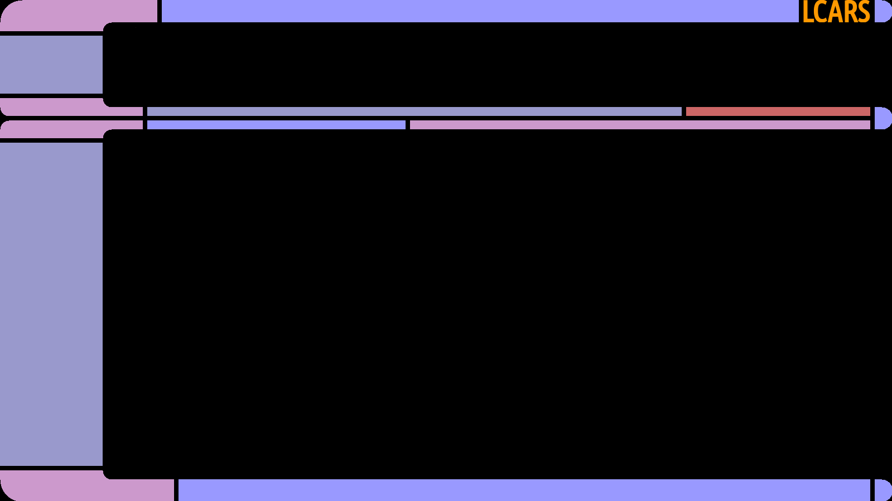
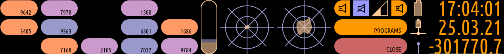

Manual
Index
Parts of the LCARS Desktop Environment
lcarsde consists of five parts. The core is the window manager lcarswm. It handles the windows and draws the main frame. On the left lower big bar is the application menu that lists open windows and allows to focus and close them. On the top area is the status bar that shows system information and provides a few adjustable buttons. Additionally, there is a program selection for listing and running installed software as well as a logout application that allows to shutdown, restart, or logout. These two applications will show up in the main area when they are selected.
The following picture shows an overview of the primary screen with the colorful status bar on the top, the program menu on the left and a browser window in the main area.
LCARS Window Manager
The window manager lcarswm takes care of managing the windows. That is, it manages the windows showing and hiding and drawing its frame with the title bar below the window. It also handles actions to move windows from screen to screen and changing their size in the different screen modes. It also draws the basic frame, which is shown without any windows in the following image.
What are the basic things, that can be done with the window manager? There are some default key bindings as well as a configuration that can be adjusted to your needs. First, these are the default key bindings:
- Win+Q: close the window manager
- Win+M: toggle display mode between normal, maximized and fullscreen
- Alt+Tab: toggle through the windows
- Alt+Win+Up/Down: move the focused window to another monitor
- Alt+F4: close the focused window
Windows can also be moved to other monitors by clicking, holding and dragging the titlebar of a window. The titlebar is below the window.
There are a view more key bindings that will open programs, but those are probably what needs to be adjusted, which brings us to the configuration files. There are two configuration files for lcarswm located in /etc/lcarsde: settings.xml and autostart. Don't edit the files in this directory! Instead, if they need adjustment, copy them to ~/.config/lcarsde and adjust them there.
settings.xml contains key bindings for window manager actions and command executions. Especially the executions may be something to change and/or extend. Check the file for examples. Possible modifier keys are: Shift, Ctrl, Alt, Win/Lin/Super, Meta, Hyper. Below the key bindings, there are some general settings, which are the title, that is shown in the top frame part and the font that is used by the window manager. It is possible to set a title image, which overrides the title. The image has to be an xpm file with a height of 40 pixels and its width should be smaller then the space for the top blue bar.
lcarswm will also autostart any applications that are defined in *.desktop files that are in /etc/xdg/autostart/ or ~/.config/autostart/.
Status Bar
The status bar shows some system information like CPU usage and connectivity status and offers some buttons to perform actions like open a program or adjusting the sound. The status bar is shown in the following image.
The widgets, that are shown in the status bar can be configured. The fields with numbers on the left side are randomly generated to fill the otherwise empty space. status-config.xml is the default configuration and located in /etc/lcarsde. To adjust the settings for a user copy it to ~/.config/lcarsde and modify it there. Please check the status bar project readme for additional information on the configuration of the status bar.
Application Selection
The application selection lists all installed programs (with a desktop file) in their categories and allows to run them by clicking on the programs button. In the default status bar configuration, this application is available via the button that is labeled "programs". The following image shows the program selection.
Logout Application
The logout application offers buttons for logout, shutdown, restart, ... . In the default status bar configuration, this application is available via the button that is labeled "close". The following image shows the logout application.